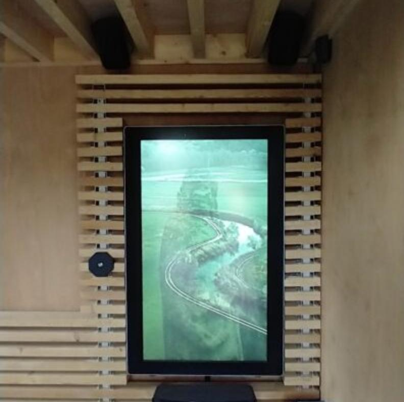

De plek
Halfweg de lange muur aan de Sint-Pieterskerk ontdek je als wandelaar of fietser een bijzondere plek: het Huis der Weemoed. Je zet je even neer, leest, luistert ... en staat verrast van het échte verhaal achter dit gebouw.
Het Huis der Weemoed is een voormalig dodenhuisje dat een nieuwe bestemming kreeg als luwteplek en streekinfopunt. Het klinkt misschien wat onwennig, maar met veel respect werd het kleine gebouw opgewaardeerd tot een rustplek waar iedereen welkom is.
De installatie
Je kan er ook op een hedendaagse manier stilstaan bij rouw en afscheid. Een mystieke film en hemelse klanken helpen je troost te vinden in de herinnering aan wat was.
Hiervoor ontwikkelde Merodefestival een verhalende video met muziek van Toon Van Mierlo, de stem van Reineke Van Hooreweghe en de zang van Sophie Janna. De opname was in handen van Bert Huysentruyt.
Voor jouw plek
Merodefestival werkt dit graag uit voor andere erfgoedsites en natuurdomeinen. Maarten Deboes staat in voor de techniek, Bert Huysentruyt voor de opnames. De muzikanten worden gekozen in overleg.
